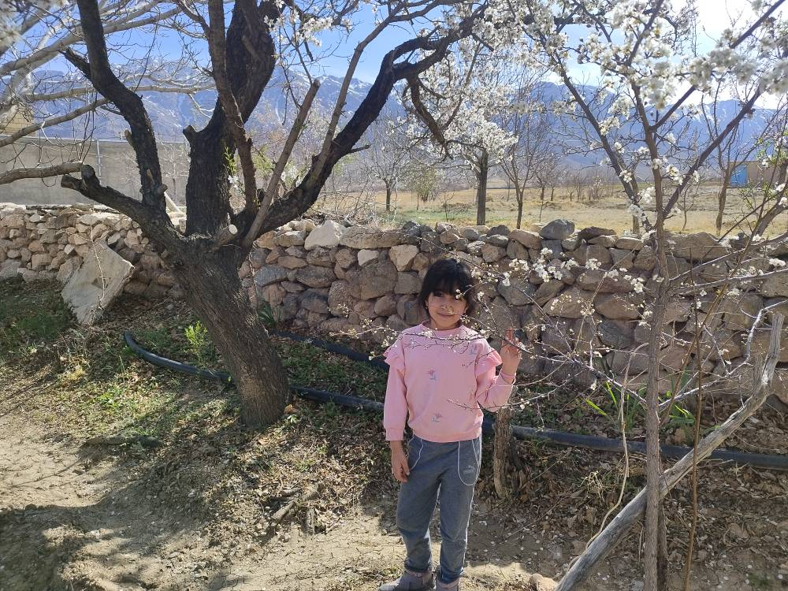

اطلاعات
جانان فاضل امیری در سال ۱۳۹۶ در شهر شیراز متولد شد. او دختری خلاق، شجاع و مهربان است که با انرژی و انگیزه فراوان در مسیر یادگیری و رشد گام برمیدارد. جانان در مدرسه معارف ۷ و در پایه دوم دبستان مشغول به تحصیل است. او به درس ریاضی علاقه زیادی دارد و از حل مسئلهها و یادگیری مطالب جدید لذت میبرد. دوستانش او را به مهربانی و خوشرفتاری میشناسند و از بودن در کنار او احساس خوبی دارند. یکی از علاقهمندیهای مهم جانان کتابخواندن است. او به ویژه داستانهای جذاب و آموزنده را دوست دارد و اوقات زیادی را به مطالعه اختصاص میدهد. همچنین رنگ مورد علاقه او قرمز است که نشاندهنده روحیه پرنشاط و پرانرژی اوست. جانان به ورزش تنیس روی میز علاقه فراوانی دارد و این رشته را با اشتیاق دنبال میکند. او در اوقات فراغت خود نیز با برادرش فوتبال بازی میکند و از فعالیتهای ورزشی و بازیهای گروهی لذت میبرد. جانان با پشتکار، خلاقیت و روحیه مهربان خود، آیندهای روشن در پیش دارد و میتواند با تلاش و اراده به آرزوها و موفقیتهای بزرگی دست یابد.

اعضای خانواده
فرزان امیری، برادر ۱۴ ساله جانان، از دانشآموزان مدارس استعدادهای درخشان (تیزهوشان) است و در زمینه تحصیلی عملکرد بسیار خوبی دارد. او با پشتکار و تلاش فراوان در مسیر موفقیتهای علمی گام برمیدارد و همواره به عنوان فردی باهوش و پرتلاش در خانواده شناخته میشود. رابطه صمیمی فرزان با اعضای خانواده، بهویژه خواهرش جانان، بسیار نزدیک و دوستانه است. او در کنار علاقهمندیهای درسی، در فعالیتهای ورزشی نیز همراه خانواده است و با جانان در بازیهایی مانند فوتبال و پینگپنگ وقت میگذراند. خانواده فرزان در محیطی فرهنگی و تحصیلکرده رشد یافتهاند. مادر او فهیمه شجاعی معلم و پدرش علی فاضل معاون پشتیبانی سازمان منطقه آزاد اروند است. همچنین خاله و داییهای او نیز از افراد تحصیلکرده و دانشگاهی هستند. این فضای علمی و حمایتی نقش مهمی در رشد شخصیتی و موفقیتهای تحصیلی جانان داشته است. فرزان با تلاش، هوش و پشتکار خود، آیندهای درخشان در مسیر تحصیلی و علمی پیش رو دارد.
علایق
علایق و سرگرمیهای جانان بخش مهمی از شخصیت او را تشکیل میدهند. او علاقه فراوانی به دنیای داستانها و تخیل دارد و مجموعه فیلمهای «هری پاتر» محبوبترین فیلم اوست. در میان شخصیتهای این مجموعه نیز «هرمیون گرنجر» را بیش از همه دوست دارد؛ زیرا او را فردی باهوش، پرتلاش و موفق میداند. جانان از مطالعه کتابهای داستانی لذت میبرد و دوست دارد با شخصیتها و ماجراهای جدید آشنا شود. خواننده مورد علاقه او هایده است و شنیدن ترانههای او را دوست دارد. همچنین به فعالیتهای هنری علاقهمند است و از انجام کارهای خلاقانه لذت میبرد. در میان فصلهای سال، زمستان را بیشتر از همه دوست دارد و آرزو دارد روزی به کشور نروژ سفر کند و زیباییهای طبیعی آن را از نزدیک ببیند. حیوان مورد علاقه او طاووس است که به نظرش نماد زیبایی و شکوه است. جانان بیشتر دوست دارد اوقات خود را در کنار خانواده سپری کند و از بودن در جمع خانواده لذت میبرد. او همچنین به فعالیتهای ورزشی در فضای باز علاقه دارد و ترجیح میدهد زمان خود را بیرون از خانه بگذراند. از میان مشاغل مختلف نیز دندانپزشکی را برای آینده خود انتخاب کرده و امیدوار است با تلاش و پشتکار به این هدف دست پیدا کند.
موفقیتهای پینگ پنگ
ورزش تنیس روی میز یکی از مهمترین بخشهای زندگی جانان است. او از دوران پیشدبستانی وارد این رشته ورزشی شد و تاکنون بیش از سه سال است که با علاقه و پشتکار به تمرین و پیشرفت در آن ادامه میدهد. جانان زیر نظر آقای جلیلی آموزش دیده و با تلاش مستمر توانسته است مهارتهای خود را به طور چشمگیری ارتقا دهد. جانان هر روز حدود سه ساعت به تمرین تنیس روی میز میپردازد و با جدیت فراوان برای رسیدن به اهداف ورزشی خود تلاش میکند. سبک بازی او ترکیبی از بازی هجومی و دفاعی است و همین ویژگی باعث شده است در شرایط مختلف مسابقه عملکرد مناسبی داشته باشد. او علاوه بر حضور در مسابقات مدرسه، تجربه شرکت در رقابتهای استانی را نیز در کارنامه خود دارد. کسب مقام چهاردهم و هجدهم استان در سنین پایین، نشاندهنده استعداد، پشتکار و آینده روشن او در این رشته ورزشی است. یکی از مهمترین عوامل موفقیت جانان، حمایت و تشویق خانواده او بهویژه مادرش بوده است. مادر جانان همواره با انگیزهبخشی و همراهی مستمر، نقش مهمی در ادامه مسیر ورزشی او ایفا کرده است. جانان آرزو دارد در آینده با تلاش بیشتر، به عضویت تیم ملی تنیس روی میز ایران درآید و در مسابقات بزرگ ملی و بینالمللی از کشورش نمایندگی کند. از ویژگی های مثبت او این است که چپ دست است.